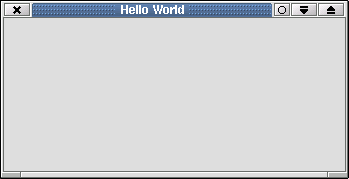
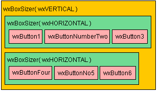

wxPython, a cross-platform GUI Library
Abstract
- In
this document, we present a cross-platform GUI (Graphical User
Interface) called wxPython . We shall be using wxPython 2.2.5 . We
shall also introduce a few advanced topics that make the strength of
wxPython. This document is available in several formats, including
PostScript, PDF, HTML and plain ASCII, from the Python HOWTO page at py-howto. The aim of the "Getting Started" guide is to teach the essentials of wxPython, partially by describing how wxPython works, and partially by providing useful and fully-working application which you can use as a model. It does not attempt to exhaustively describe every aspect of wxPython -- only the very core elements which every wxPython programmer needs to know are covered here. For more detailed descriptions of various topics, see the wxPython Cookbook.
- Table of Contents:
Contents
- wxPython, a cross-platform GUI Library
- Abstract
- What is wxPython ?
- Prerequisites
- Installation
- A First Application: "Hello, World"
- Building a wxPython Application
- Working with Windows
- Responding to User Actions
- Drawing
- Using wxPython
- Next Steps
- Useful resources
- As a conclusion- slithering our way to the future of GUI-apps
- Contributors
- Appendix
- Comments
- Comment Sample
- OS independent path concatenation
- OS independent path concatenation (part 2)
- small correction
- Correction to "adding the edit component" code snippet
- typo fix
- indentation fix
- Use the sizer in one step
- Mac specific fix for Hello World example
- RFE: Make the wiki spell checker happy about this page
- Code fix
- How to get tabs to work
- Examples update for wxPython 2.4/Python 2.3
- Spotted a possible error in the "Examples update for wxPython 2.4/Python 2.3" above
- In wxPython 2.4 and higher, you don't need to call SetAutoLayout()
What is wxPython ?
WxPython ranks amongst the toolkits that enable writing cross-platform GUI-applications along with pyQT , pyGTK , or Tkinter . But under windows, and unlike Tkinter or pyGTK, a wxPython Application has a look and feel very similar to what you would get with an application using microsoft native GUI, MFC [1]. This is because wxPython is a fine layer over the native GUI classes. Besides this, wxPython is very simple to learn and takes advantage of the possibilities Python is offering. For instance, events handling is particularly nice under wxPython. In fact, wxPython is simply (?) Python Bindings to a C++ Library called wxWidgets formerly called wxWindows); dating back from 1992 [2], wxWidgets is now a very stable, efficient, object-oriented library running (smoothly) on Windows, Unix ( GTK/Motif/Lesstif) and soon Macintosh.
[1] Microsoft Foundation Classes
[2] It's almost as old as Tkinter - which dates back from 1990
Prerequisites
- We assume the reader has sufficient knowledge of Python and is familiar with classes and objects in Python [3]. No other knowledge is required.
[3] If you are not already a Pythonista, you might want to have a look at http://www.freenetpages.co.uk/hp/alan.gauld/
Installation
Windows
- Installation under windows is especially simple: Run the installer you
can get from wxPython and follow the instructions.
Linux - Redhat
- You can find RPMs for Redhat (they are working just fine with Mandrake
through), at the address wxPython
Linux - Debian
wxPython can be installed through apt-get by calling apt-get install python-wxgtk2.4 or apt-get install python-wxgtk2.6, depending on which version you want. The wxPython demo is in the wx-examples package. Install it with apt-get install wx2.4-examples or apt-get install wx2.6-examples. Once it is installed, you need to copy /usr/share/doc/wx2.[4|6]-examples/examples/wxPython to a directory which you can edit. You then need to unzip each compressed file. You can do it with a script such as this one:
for i in *.gz; do gunzip $i doneYou can then run the demo by typing python demo.py.
Linux - Gentoo
wxPython can be installed through portage by calling emerge wxPython (notice the capital P). The correct command is actually emerge wxpython (without a capital p) as of 11/28/04.
Linux - Building from the source
You might also want to build wxPython from the source. You have to do this in three steps:
Installing Python
You should have already done that. Refer to the Python website to have some more information. ( BUILD.unix is probably the helpfile you are looking for )
Installing wxGTK
wxGTK is the GTK version of wxWidgets. GTK (Gimp ToolKit) is a graphic library used by Gnome, so it is probably already installed on your Linux box. All you have to do is download the wxGTK source from the wxGTK ftp server. Or the wxWidgets website
- Untar wxGTK by type the command:
tar -xvzf wxGTK-2.2.5.tar.gz
- Go into the directory:
cd wxGTK-2.2.5
- Run the configure script:
./configure --with-gtk
You might get some errors here if GTK is not installed or if the include files for GTK are not installed (in a Mandrake distribution, gtk+-devel-1.2.8-6mdk.i586.rpm is the rpm that you want to install)
- Run the make file:
make
- You might get some errors here if yacc or lex are not installed. (in a Mandrake distribution, the right rpms are byacc-1.9-7mdk.i586.rpm and flex-2.5.4a-13mdk.i586.rpm)
You should now have a compiled version of wxGTK. We want to install it and link it into the system.
- Become superuser:
su
Your root password is required here.
- Install wxGTK:
make install
- Link the library:
ldconfig
- Exit from superuser mode:
exit
Normally, wxGTK is installed but there might be a problem with wxPython:
it is possible that the library is not installed where wxPython is looking for it. ( In a mandrake 7.2 distribution, you want wxGTK to be installed in /usr/lib whereas it is automatically installed in /usr/local/lib) The solution is to create a symbolic link of the library where you want it to be:
- Go in to the directory where you want the library to be installed:
cd /usr/lib
- Create a symbolic link to the library:
ln -s /usr/local/lib/libwx_gtk.so
Installing wxPython
- Download the source code of the last wxPython release:
- Untar the tarball:
tar -xvzf wxPython-2.2.5.tar.gz
- go into the directory:
cd wxPython-2.2.5
- Edit the setup.py to choose what you want to install. I suggest that you don't install OGL and GL_CANVAS. by selecting:
BUILD_GLCANVAS = 0 # If true, build the contrib/glcanvas extension module BUILD_OGL = 0 # If true, build the contrib/ogl extension module BUILD_STC = 1 # If true, build the contrib/stc extension module CORE_ONLY = 0 # if true, don't build any of the above GL_ONLY = 0 # Only used when making the -gl RPM. See the "b" script # for the ugly details USE_SWIG = 0 # Should we actually execute SWIG, or just use the # files already in the distribution? IN_CVS_TREE = 0 # Set to true if building in a full wxWindows CVS # tree, otherwise will assume all needed files are # available in the wxPython source distribution - Build the python module:
python setup.py build
- Become root:
su
Your root password is required here.
- Install the module:
python setup.py install
- Exit root mode:
exit
- Check if the module works:
[lucas@b007 wxPython-2.2.5]$ python Python 1.5.2 (#1, Sep 30 2000, 18:08:36) [GCC 2.95.3 19991030 (prerelease)] on linux-i386 Copyright 1991-1995 Stichting Mathematisch Centrum, Amsterdam >>> import wx >>>
wxPython is fully installed!
Mac Os X
You should first follow the instruction described here.
A french howto can be found here
A First Application: "Hello, World"
- As is traditional, we are first going to write a Small "Hello, world" application. Here is the code:
#!/usr/bin/env python import wx app = wx.PySimpleApp() frame = wx.Frame(None, wx.ID_ANY, "Hello World") frame.Show(True) app.MainLoop()
- Here is what you should get with wxGTK:
 After importing wxPython GUI, we instantiate a new wxPySimpleApp and a new wxFrame. A frame in wxPython is a window with its titlebar, reduction and close buttons, etc... [4] We make this Frame appear by "showing" it. Eventually, we start the application's MainLoop whose role is to handle the events. Notice the shape of the constructor of wxFrame:
1 wx.Frame(Parent, Id, "Hello World")
- Most
of the constructors in wxPython have this shape: A parent object as a
first parameter and an Id in a second parameter. As shown in the
example, it's possible to use respectively None and wx.ID_ANY as default parameters. (Meaning the object has no parent or respectively a system-defined Id)
[4] it can be a normal application window, a MDI parent frame, etc...
Building a wxPython Application
Topics:
- Creating a wxWindows application
- Structuring your application so that it can handle multiple documents.
In this section, we shall build a little editor. This is mostly to convince you of the inner capabilities and of the simplicity of use of wxPython. If you are already convinced you might as well want to read the Advanced Topics first.
Overview
When people talk of graphical user interfaces, they usually talk about things like windows, menus, the mouse, icons, etc. Naturally enough, then, you might assume that a wxWindow object represents a window on the computer screen. But you'd be wrong. In wxPython, a wxWindow is anything which can take up visual space on the computer screen. Thus, the wxWindow class is the base class from which all visual elements are derived -- including input fields, pull-down menus, etc. The wxWindow class defines all the behaviour common to all visual GUI elements, including positioning, sizing, showing, giving focus, etc. If you're looking for an object to represent a window on the computer screen, don't look at wxWindow; look at wxFrame instead. wxFrame (which is derived from wxWindow) implements all behaviour specific to windows on the computer's screen (and within an MDI interface -- but that's another story). So to create a window on the computer screen, you create a wxFrame (or one of its sub-classes, such as wxDialog), rather than a wxWindow. Think in terms of frames, not windows, and you'll be fine.
A Working Example
Adding the edit component
- The first step is to add a new edit component to our hello world application. [5]
#!/usr/bin/env python
import wx
class MainWindow(wx.Frame):
""" We simply derive a new class of Frame. """
def __init__(self, parent, id, title):
wx.Frame.__init__(self, parent, id, title, size=(200,100))
self.control = wx.TextCtrl(self, 1, style=wx.TE_MULTILINE)
self.Show(True)
app = wx.PySimpleApp()
frame=MainWindow(None, wx.ID_ANY, 'Small editor')
app.MainLoop()
(Note that since the frame now shows itself in its init method, you no longer have to call frame.Show() explicitly, as in the first example.) As you can see, it is not very difficult: All we have to do is to derive wxFrame and then overwrite its __init__ method. In this method, we declare a new wx.TextCtrl, which is a simple text edit control. You will want to have a look at the demos that are bundled with the install package. They deal with all sorts of subjects and show how easy and rich wxPython is.
[5] The code herein appears, courtesy of Mr Michael Roberts. See also his excellent article in useful resources section.
Adding a menu
- Every application should have a menu bar and a status bar. Let's add them to ours:
1 import wx
2 ID_ABOUT=101
3 ID_EXIT=110
4 class MainWindow(wx.Frame):
5 def __init__(self,parent,id,title):
6 wx.Frame.__init__(self,parent,wx.ID_ANY, title, size = (200,100))
7 self.control = wx.TextCtrl(self, 1, style=wx.TE_MULTILINE)
8 self.CreateStatusBar() # A Statusbar in the bottom of the window
9 # Setting up the menu.
10 filemenu= wx.Menu()
11 filemenu.Append(wx.ID_ABOUT, "&About"," Information about this program")
12 filemenu.AppendSeparator()
13 filemenu.Append(wx.ID_EXIT,"E&xit"," Terminate the program")
14 # Creating the menubar.
15 menuBar = wx.MenuBar()
16 menuBar.Append(filemenu,"&File") # Adding the "filemenu" to the MenuBar
17 self.SetMenuBar(menuBar) # Adding the MenuBar to the Frame content.
18 self.Show(True)
19 app = wx.PySimpleApp()
20 frame = MainWindow(None, -1, "Sample editor")
21 app.MainLoop()
- The only little problem is that our application does little more than showing our new menu: As it is, our menu is a stillborn, devoid of any reaction. Let's implement reactions into our program:
Practical event handling
- Reacting
to events in wxPython is called event handling. Flexible event handling
is one of the biggest strengths of wxPython. We are going to present
practical basic event handling and we'll discuss later in advanced
topics, the how and why. An event is a small message sent by wxPython
to your application to signify that "something" has happened [6]. Most
often, in wxPython, all you have to do, is to "connect" an event with a
particular method. This is done by calling
the pseudo methods EVT_*. (Also see Avoiding EVT_MENU.) For instance:
1 EVT_MENU(self, ID_ABOUT, self.OnAbout)
- In other words, from now on, any menu selection event with ID,
ID_ABOUT that is sent to window self, will be passed to the method self.OnAbout. The latter method has the general declaration:
1 def OnAbout(self, event):
2 ...
where event is an instance of a subclass of wxEvent. When this kind of method receives an event, there are two things that it can do:
- Skip the event, i.e. let it go through the hierarchy of event handlers.
Handle or catch (don't Skip) the event, i.e. the event will stop here after the callback function finishes. (
 This is default behaviour) You "Skip" an event by calling the method event.Skip()
This is default behaviour) You "Skip" an event by calling the method event.Skip()
Now let's have a look at our application:
1 import os
2 import wx
3 ID_ABOUT=101
4 ID_EXIT=110
5 class MainWindow(wx.Frame):
6 def __init__(self,parent,id,title):
7 wx.Frame.__init__(self,parent,wx.ID_ANY, title, size = (200,100))
8 self.control = wx.TextCtrl(self, 1, style=wx.TE_MULTILINE)
9 self.CreateStatusBar() # A StatusBar in the bottom of the window
10 # Setting up the menu.
11 filemenu= wx.Menu()
12 filemenu.Append(ID_ABOUT, "&About"," Information about this program")
13 filemenu.AppendSeparator()
14 filemenu.Append(ID_EXIT,"E&xit"," Terminate the program")
15 # Creating the menubar.
16 menuBar = wx.MenuBar()
17 menuBar.Append(filemenu,"&File") # Adding the "filemenu" to the MenuBar
18 self.SetMenuBar(menuBar) # Adding the MenuBar to the Frame content.
19 wx.EVT_MENU(self, ID_ABOUT, self.OnAbout) # attach the menu-event ID_ABOUT to the
20 # method self.OnAbout
21 wx.EVT_MENU(self, ID_EXIT, self.OnExit) # attach the menu-event ID_EXIT to the
22 # method self.OnExit
23 self.Show(True)
24 def OnAbout(self,e):
25 d= wx.MessageDialog( self, " A sample editor \n"
26 " in wxPython","About Sample Editor", wx.OK)
27 # Create a message dialog box
28 d.ShowModal() # Shows it
29 d.Destroy() # finally destroy it when finished.
30 def OnExit(self,e):
31 self.Close(True) # Close the frame.
32 app = wx.PySimpleApp()
33 frame = MainWindow(None, -1, "Sample editor")
34 app.MainLoop()
[6] the mouse has been moved, a key has been pressed, the user has popped up the menu, everything you might possibly think of...
More magic
- Of
course an editor is useless if it is not able to save or open
documents. That's where Common dialogs come in. Common dialogs are
those offered by the underlying platform so that your application will
look exactly like a native application. Here is the implementation of
the OnOpen method in MainWindow :
1 def OnOpen(self,e):
2 """ Open a file"""
3 self.dirname = ''
4 dlg = wx.FileDialog(self, "Choose a file", self.dirname, "", "*.*", wx.OPEN)
5 if dlg.ShowModal() == wx.ID_OK:
6 self.filename=dlg.GetFilename()
7 self.dirname=dlg.GetDirectory()
8 f=open(os.path.join(self.dirname,self.filename),'r')
9 self.control.SetValue(f.read())
10 f.close()
11 dlg.Destroy()
- This method works just in three steps:
- First, we create the dialog by calling the appropriate Constructor.
Then, we call the ShowModal method, that does all the real work and returns a value corresponding to what the user has pressed (OK button or Cancel)
- If necessary, we retrieve the filename and the directory of the selected file and we load it into the editor. Finally, we destroy the dialog.
the menu and connect it to the OnOpen method. Find the complete source in the appendix.
Possible extensions
- Of
course, this program is far from being a decent editor. But adding
other features should not be any more difficult than what has already
been done. You might take inspiration from the demos that are bundled
with wxPython:
- Drag and Drop.
- MDI
- Tab view/multiple files
- Find/Replace dialog
- Print dialog
- Macro-commands in python ( using the eval function)
- etc ...
Working with Windows
Topics:
- Frames
- Windows
- Controls/Widgets
- Sizers
- Validators
In this section, we are going to present the way wxPython deals with windows and their contents, including building input forms and using various widgets/controls. We are going to build a small application that calculates the price of a quote. If you are already an experienced GUI developer, this is going to be easy and you might want to move on to the Boa-Constructor Subsection in the Advanced topics chapter.
Overview
Laying out Visual Elements
- Within
a frame, you'll use a number of wxWindow sub-classes to flesh out the
frame's contents. Here are some of the more common elements you might
want to put in your frame:
A wxMenuBar, which puts a menu bar along the top of your frame.
A wxStatusBar, which sets up an area along the bottom of your frame for displaying status messages, etc.
A wxToolBar, which puts a toolbar in your frame.
Sub-classes of wxControl. These are objects which represent user interface widgets (ie, visual elements which display data and/or process user input). Common examples of wxControl objects include wxButton, wxStaticText, wxTextCtrl and wxComboBox.
A wxPanel, which is a container to hold your various wxControl objects. Putting your wxControl objects inside a wxPanel means that the user can tab from one UI widget to the next.
All visual elements (wxWindow objects and their subclasses) can hold sub-elements. Thus, for example, a wxFrame might hold a number of wxPanel objects, which in turn hold a number of wxButton, wxStaticText and wxTextCtrl objects, giving you an entire hierarchy of elements:
 Note that this merely describes the way that certain visual elements are interrelated -- not how they are visually laid out within the frame. To handle the layout of elements within a frame, you have several options:
Note that this merely describes the way that certain visual elements are interrelated -- not how they are visually laid out within the frame. To handle the layout of elements within a frame, you have several options: - You can manually position each element by specifying it's exact pixel coordinate within the parent window. Because of differences in font sizes, etc, between platforms, this option is not generally recommended.
You can use wxLayoutConstraints, though these are fairly complex to use.
You can use the Delphi-like LayoutAnchors, which make it easier to use wxLayoutConstraints.
- You can use one of the wxSizer subclasses.
TODO: Add description for other element placement schemes???. To get the first impression about other element placement schemes: http://wxpython.org/tut-part2.php

Sizers
A sizer (that is, one of the wxSizer sub-classes) can be used to handle the visual arrangement of elements within a window or frame. Sizers can:
- Calculate an appropriate size for each visual element.
- Position the elements according to certain rules.
- Dynamically resize and/or reposition elements when a frame is resized.
wxBoxSizer, which arranges visual elements in a line going either horizontally or vertically.
wxGridSizer, which lays visual elements out into a grid-like structure.
wxFlexGridSizer, which is similar to a wxGridSizer except that it allow for more flexibility in laying out visual elements.
A sizer is given a list of wxWindow objects to size, either by calling sizer.Add(window, options...), or by calling sizer.AddMany(...). A sizer will only work on those elements which it has been given. Sizers can be nested. That is, you can add one sizer to another sizer, for example to have two rows of buttons (each laid out by a horizontal wxBoxSizer) contained within another wxBoxSizer which places the rows of buttons one above the other, like this: 
Note: Notice that the above example does not lay out the six buttons into two rows of three columns each -- to do that, you should use a wxGridSizer.
{kind=link}
1 import wx
2 import os
3 ID_ABOUT=101
4 ID_OPEN=102
5 ID_BUTTON1=110
6 ID_EXIT=200
7 class MainWindow(wx.Frame):
8 def __init__(self,parent,id,title):
9 self.dirname=''
10 wx.Frame.__init__(self,parent,wx.ID_ANY, title)
11 self.control = wx.TextCtrl(self, 1, style=wx.TE_MULTILINE)
12 self.CreateStatusBar() # A Statusbar in the bottom of the window
13 # Setting up the menu.
14 filemenu= wx.Menu()
15 filemenu.Append(ID_OPEN, "&Open"," Open a file to edit")
16 filemenu.AppendSeparator()
17 filemenu.Append(ID_ABOUT, "&About"," Information about this program")
18 filemenu.AppendSeparator()
19 filemenu.Append(ID_EXIT,"E&xit"," Terminate the program")
20 # Creating the menubar.
21 menuBar = wx.MenuBar()
22 menuBar.Append(filemenu,"&File") # Adding the "filemenu" to the MenuBar
23 self.SetMenuBar(menuBar) # Adding the MenuBar to the Frame content.
24 wx.EVT_MENU(self, ID_ABOUT, self.OnAbout)
25 wx.EVT_MENU(self, ID_EXIT, self.OnExit)
26 wx.EVT_MENU(self, ID_OPEN, self.OnOpen)
27 self.sizer2 = wx.BoxSizer(wx.HORIZONTAL)
28 self.buttons=[]
29 for i in range(0,6):
30 self.buttons.append(wx.Button(self, ID_BUTTON1+i, "Button &"+`i`))
31 self.sizer2.Add(self.buttons[i],1,wx.EXPAND)
32 # Use some sizers to see layout options
33 self.sizer=wx.BoxSizer(wx.VERTICAL)
34 self.sizer.Add(self.control,1,wx.EXPAND)
35 self.sizer.Add(self.sizer2,0,wx.EXPAND)
36 #Layout sizers
37 self.SetSizer(self.sizer)
38 self.SetAutoLayout(1)
39 self.sizer.Fit(self)
40 self.Show(1)
41 def OnAbout(self,e):
42 d= wx.MessageDialog( self, " A sample editor \n"
43 " in wxPython","About Sample Editor", wx.OK)
44 # Create a message dialog box
45 d.ShowModal() # Shows it
46 d.Destroy() # finally destroy it when finished.
47 def OnExit(self,e):
48 self.Close(True) # Close the frame.
49 def OnOpen(self,e):
50 """ Open a file"""
51 dlg = wx.FileDialog(self, "Choose a file", self.dirname, "", "*.*", wx.OPEN)
52 if dlg.ShowModal() == wx.ID_OK:
53 self.filename=dlg.GetFilename()
54 self.dirname=dlg.GetDirectory()
55 f=open(os.path.join(self.dirname, self.filename),'r')
56 self.control.SetValue(f.read())
57 f.close()
58 dlg.Destroy()
59 app = wx.PySimpleApp()
60 frame = MainWindow(None, -1, "Sample editor")
61 app.MainLoop()
The sizer.Add method has three arguments. The first one specifies the control to include in the sizer. The second one is a weight factor which means that this control will be sized in proportion to other ones. For example, if you had three edit controls and you wanted them to have the proportions 3:2:1 then you would specify these factors as arguments when adding the controls. 0 means that this control or sizer will not grow. The third argument is normally wxGROW (same as wxEXPAND) which means the control will be resized when necessary. If you use wxSHAPED instead, the controls aspect ratio will remain the same.
If the second parameter is 0, i.e. the control will not be resized, the third parameter may indicate if the control should be centered horizontally and/or vertically by using wxALIGN_CENTER_HORIZONTAL, wxALIGN_CENTER_VERTICAL, or wxALIGN_CENTER (for both) instead of wxGROW or wxSHAPED as that third parameter.
You can alternatively specify combinations of wxALIGN_LEFT, wxALIGN_TOP, wxALIGN_RIGHT, and wxALIGN_BOTTOM. The default behavior is equivalent to wxALIGN_LEFT | wxALIGN_TOP.
One potentially confusing aspect of the wxSizer and its sub-classes is the distinction between a sizer and a parent window. When you create objects to go inside a sizer, you do not make the sizer the object's parent window. A sizer is a way of laying out windows, it is not a window in itself. In the above example, all six buttons would be created with the parent window being the frame or window which encloses the buttons -- not the sizer. If you try to create a visual element and pass the sizer as the parent window, your program will crash.
- Once you have set up your visual elements and added them to a sizer (or to a nested set of sizers), the next step is to tell your frame or window to use the sizer. You do this in three steps:
1 window.SetSizer(sizer)
2 window.SetAutoLayout(true)
3 sizer.Fit(window)
The SetSizer() call tells your window (or frame) which sizer to use. The call to SetAutoLayout() tells your window to use the sizer to position and size your components. And finally, the call to sizer.Fit() tells the sizer to calculate the initial size and position for all its elements. If you are using sizers, this is the normal process you would go through to set up your window or frame's contents before it is displayed for the first time.
Menus
TODO:
Validators
When you create a dialog box or other input form, you can use a wxValidator to simplify the process of loading data into your form, validating the entered data, and extracting the data out of the form again. wxValidator can also be used to intercept keystrokes and other events within an input field. To use a validator, you have to create your own sub-class of wxValidator (neither wxTextValidator nor wxGenericValidator are implemented in wxPython). This sub-class is then associated with your input field by calling myInputField.SetValidator(myValidator).
Note: Your wxValidator sub-class must implement the wxValidator.Clone() method.
A Working Example
Our first label within a panel
- Let's start with an example. Our program is going to have a single Frame with a panel [7] containing a label [8]:
1 import wx
2 class Form1(wx.Panel):
3 def __init__(self, parent, id):
4 wx.Panel.__init__(self, parent, id)
5 self.quote = wx.StaticText(self, -1, "Your quote :", wx.Point(20, 30), wx.Size(200, -1))
6 app = wx.PySimpleApp()
7 frame = wx.Frame(None, -1, " Our first Control")
8 Form1(frame,-1)
9 frame.Show(1)
10 app.MainLoop()
- This design should be clear and you should not have any problem with it if you read the Small Editor section of this howto. Notice in the line:
1 self.quote = wx.StaticText(self, -1, "Your quote :",wx.Point(20, 30))
the use of self as parent parameter of our wxStaticText. Our Static text is going to be on the panel we have created just before. The second parameter refers to the Id number of the new control. As this static control is not really going to be sending events, we don't care about this parameter. The wxPoint is used as positioning parameter. There is also an optional wxSize parameter but its use here is not justified.
[7] According to wxPython documentation:
- "A panel is a window on which controls are placed. It is usually placed within a frame. It contains minimal extra functionality over and above its parent class wxWindow; its main purpose is to be similar in appearance and functionality to a dialog, but with the flexibility of having any window as a parent.", in fact, it is a simple window used as a (grayed) background for other objects which are meant to deal with data entry. These are generally known as Controls or Widgets.
[8] A label is used to display text that is not supposed to interact with the user.
Adding a few more controls
- You
will find a complete list of the numerous Controls that exist in
wxPython in the demo and help, but here we are going to present those
most frequently used:
wxButton The most basic Control: A button showing a text that you can click. Use the connector-function to handle a click on the button:
1 EVT_BUTTON(Control, Id, callback function)
wxTextCtrl This control let the user input a small line of text (In its single line version at least...). It generates two main events:
1 EVT_TEXT(control, Id ,callback function )
- That is called when the text has changed.
1 EVT_CHAR(control,callback function )
- That is called to signify that a key has been pressed.
wxComboBox A combobox is very similar to wxTextCtrl but in addition to the events generated by wxTextCtrl, wxComboBox has the handler:
1 EVT_COMBOBOX(control, id, callback function)
wxCheckBox The checkbox is a control that gives the user true/false choice.
wxRadioBox The radiobox lets the user choose from a list of options.
Let's have a closer look at what Form1 looks like now:
1 import wx
2 class Form1(wx.Panel):
3 def __init__(self, parent, id):
4 wx.Panel.__init__(self, parent, id)
5 self.quote = wx.StaticText(self, -1, "Your quote :",wx.Point(20, 30))
6 # A multiline TextCtrl - This is here to show how the events work in this program, don't pay too much attention to it
7 self.logger = wx.TextCtrl(self,5, "",wx.Point(300,20), wx.Size(200,300),wx.TE_MULTILINE | wx.TE_READONLY)
8 # A button
9 self.button =wx.Button(self, 10, "Save", wx.Point(200, 325))
10 wx.EVT_BUTTON(self, 10, self.OnClick)
11 # the edit control - one line version.
12 self.lblname = wx.StaticText(self, -1, "Your name :",wx.Point(20,60))
13 self.editname = wx.TextCtrl(self, 20, "Enter here your name", wx.Point(150, 60), wx.Size(140,-1))
14 wx.EVT_TEXT(self, 20, self.EvtText)
15 wx.EVT_CHAR(self.editname, self.EvtChar)
16 # the combobox Control
17 self.sampleList = ['friends', 'advertising', 'web search', 'Yellow Pages']
18 self.lblhear = wx.StaticText(self,-1,"How did you hear from us ?",wx.Point(20, 90))
19 self.edithear=wx.ComboBox(self, 30, "", wx.Point(150, 90), wx.Size(95, -1),
20 self.sampleList, wx.CB_DROPDOWN)
21 wx.EVT_COMBOBOX(self, 30, self.EvtComboBox)
22 wx.EVT_TEXT(self, 30, self.EvtText)
23 # Checkbox
24 self.insure = wx.CheckBox(self, 40, "Do you want Insured Shipment ?",wx.Point(20,180))
25 wx.EVT_CHECKBOX(self, 40, self.EvtCheckBox)
26 # Radio Boxes
27 self.radioList = ['blue', 'red', 'yellow', 'orange', 'green', 'purple',
28 'navy blue', 'black', 'gray']
29 rb = wx.RadioBox(self, 50, "What color would you like ?", wx.Point(20, 210), wx.DefaultSize,
30 self.radioList, 3, wx.RA_SPECIFY_COLS)
31 wx.EVT_RADIOBOX(self, 50, self.EvtRadioBox)
32 def EvtRadioBox(self, event):
33 self.logger.AppendText('EvtRadioBox: %d\n' % event.GetInt())
34 def EvtComboBox(self, event):
35 self.logger.AppendText('EvtComboBox: %s\n' % event.GetString())
36 def OnClick(self,event):
37 self.logger.AppendText(" Click on object with Id %d\n" %event.GetId())
38 def EvtText(self, event):
39 self.logger.AppendText('EvtText: %s\n' % event.GetString())
40 def EvtChar(self, event):
41 self.logger.AppendText('EvtChar: %d\n' % event.GetKeyCode())
42 event.Skip()
43 def EvtCheckBox(self, event):
44 self.logger.AppendText('EvtCheckBox: %d\n' % event.Checked())
45 app = wx.PySimpleApp()
46 frame = wx.Frame(None, -1, " Quote Control")
47 Form1(frame,-1)
48 frame.Show(1)
49 app.MainLoop()
- Our class has grown a lot bigger; it has now a lot of controls and
those controls react. We have added a special wxTextCtrl control to show the various events that are sent by the controls.
The notebook
- Sometimes, a form grows too big to fit on a single page. The
wxNoteBook is used in that kind of case : It allows the user to navigate quickly between a small amount of pages by clicking on associated tabs. We implement this by putting the wxNotebook instead of our form into the main Frame and then add our Form1 into the notebook by using method AddPage.
1 app = wx.PySimpleApp()
2 frame = wx.Frame(None,-1," Demo with Notebook")
3 nb = wx.Notebook(frame,-1)
4 form1=Form1(nb, -1)
5 nb.AddPage(form1, "Absolute Positioning")
6 frame.Show(1)
7 app.MainLoop()
Improving the layout - Using Sizers
- Using
absolute positioning is often not very satisfying: The result is ugly
if the windows are not (for one reason or another) the
right size. WxPython has very rich vocabulary of objects to lay out controls.
wxBoxSizer is the most common and simple layout object but it permits a vast range of possibilities. Its role is roughly to arrange a set of controls in a line or in a row and rearrange them when needed (i.e. when the global size is changed).
wxGridSizer and wxFlexGridSizer are two very important layout tools. They arrange the controls in a tabular layout.
Responding to User Actions
Topics:
- Events
- Pop-up Menus
Overview
- Concepts to go here.
A Working Example
TODO: Example to go here.
Drawing
Topics:
- Device Contexts
- Fonts
- Colours
- onPaint() methods
Overview
- In this section, we shall try to introduce the way to draw inside a window. We'll also show how to create a menu that pops up when there is a right-click inside the main window.
A Working Example
Using wxPython
Debugging Techniques
- When a python program hits an unhandled exception (bug!) in your program, it aborts with a traceback that is useful in locating the source of the problem. wxPython programs do the same, but with a twist. The traceback is routed to stdio, which is captured in a nice GUI frame independent of your program. If an exception shows up in an event handler, the traceback is displayed, and your program continues on as best it can. BUT, if the exception occurs while initializing your program, the traceback will show up, and then your program will abort, taking the stdio window (and your traceback) with it before even the fastest reader can make sense of it. You can keep stdio from being hijacked by wxPython by providing a couple of optional parameters when you instantiate your wxApp. An example says it best:
1 def MyApp (wxApp):
2 #...
3 #...
4 #...
5 myapp = MyApp() # functions normally. Stdio is redirected to its own window
6 myapp = MyApp(0) #does not redirect stdout. Tracebacks will show up at the console.
7 myapp = MyApp(1, 'filespec') #redirects stdout to the file 'filespec'
8 # NOTE: These are named parameters, so you can do this for improved readability:
9 myapp = MyApp(redirect = 1, filename = 'filespec') # will redirect stdout to 'filespec'
10 myapp = MyApp(redirect = 0) #stdio will stay at the console...
TODO: Discuss source debuggers, event loop conflicts, etc.
PyCrust interactive shell
wxPython distribution comes with the nice PyCrust shell. With it you can interactvely test your layout. Here is a [screenshot] with a sample code.
{kind=link}
Deploying your wxPython Application
Next Steps
Events
- Event
handling is one of the key feature of wxPython. All GUI systems known
to us rely on events to distribute information between various
applications. Deciding what to do when a particular event is received
is every GUI-application's job and is called Event Handling. Back in
the old days before object programming, dealing with events meant you
would have a "switch" operation that decided what to do with a
particular type of event. With the arrival of Object Oriented
Programming things are not that simple any more : There are now two
ways of handling events:
- One method (e.g. Java one) relies on what are called event handlers. Event handlers are attached to a particular object and bound to a callback function/method. When the object receives a particular type of event, the event handler triggers the callback function.
- The other approach is to give predetermined names to methods that are supposed to handle a particular event. This way, if you want to modify the response of a particular class to a particular event, you have to derive your class and overload the right method.
So then "self.Bind(wx.EVT_SOMETHING, ACallable)" would mean:
When a SOMETHING event is delivered to this Window (self), and it comes from any child window or itself, then call ACallable, and self must be a class derived from a wxPython window (e.g. a Button, a Dialog, a Frame), and "ACallable" can be any function, though the usual choice by the programmer is to make it a function within the above-mentioned class.
The second version "self.Bind(wx.EVT_SOMETHING, ACallable, srcWin)" means:
When a SOMETHING event is generated by "srcWin", and it comes up through the window hierarchy to this Window (self), then call ACallable.
But some events can only be caught in the Window in which they are generated (which means the second form then won't do anything), so it is best to use the first form whenever possible, which would be basically everywhere except for menu items, which don't have a Bind() method.
TODO: Creating custom event handlers event. Skip() -- non-intuitive meaning of this method.
Scintilla
- Scintilla is the base component used by wxStyledTextCtrl which gives us syntax coloring in wxPython.
TODO: Describe minimal modifications needed to the simple editor example, in order to syntax color the text with StyledTextCtrl, instead of just the TextCtrl?
Boa-constructor
- Boa-constructor is a RAD IDE for wxPython.
multi threading
TODO:
Managed/ Non Managed windows
Useful resources
- To
start with, a very obvious website but you can also have a look in the
demo shipped in with the wxPython package. It's full of very useful
examples approaching nearly all the subjects you can think of. How to
run the demo:
- under windows Simply select the program Run The Demo in the submenu wxPython of the start menu.
- under Linux find the demo directory in the source distribution and run "python demo.py"
- You can also try to find information on the wxWindows website. wxPython's documentation contains all wxWindows', so it's a bit pointless going there if you've already had a look at wxPython's documentation.
http://wxpython.org/maillist.php
- The wxPython mailing lists. This is a very good place to find specific information. Before asking anything, please search the archives first.
http://boa-constructor.sourceforge.net/
- Boa-constructor is a RAD GUI building IDE for wxPython.
http://www-106.ibm.com/developerworks/library/l-wxpy/index.html
- An excellent article for newbies.
http://www.oreillynet.com/pub/a/Python/excerpts/chpt20/wxpython.html
- Last but not least: The book "Python Programming on Win32" by Mark Hammond and Andy Robinson has an excellent chapter on wxPython .
Scintilla is a complete editing component for which wxPython offers bindings (a control named wxStyledTextCtrl2 ).
- The reference website for the python community.
http://starship.python.net/crew/theller/py2exe/
- With this tool, you can convert Python (and also wxPython scripts...) scripts into standalone windows programs. This makes it it easy to distribute your work.
- To
start with, a very obvious website but you can also have a look in the
demo shipped in with the wxPython package. It's full of very useful
examples approaching nearly all the subjects you can think of. How to
run the demo:
As a conclusion- slithering our way to the future of GUI-apps
You have now covered the main aspects of wxPython programming and should be able to start writing wxPython applications. Do not hesitate to take part in the wxPython community by subscribing to the mailing lists and by posting questions or answers on those lists.
Contributors
- The wxPython community
- Lucas Bruand
Rob CakeBread
- Charlie Derr
- Robin Dunn
- Michael Roberts
- Erik Westra
- We would like to thank also:
- Andrew Kuchling for his help and support and not being too bored with my never ending flow of questions and requests.
- Robin North, J-P Syed, Armel Guenneugues, Pilar Rodriguez, Matteo Caligaris for being supportive and not kidding too much around about calling me a geek.
Appendix
Small editor - Complete Source
Building Forms - Complete source
Drawing with wxPython - Complete Source
A rudimentary project organizer - Complete Source
WxProject It shows also the use of the wxPython Style Guide.
Comments
Comment Sample
Feel free to add any remarks or comments here. Content suggestions are welcome as well as corrections...
- Lucas Bruand
OS independent path concatenation
This is a really nice page. It should be better advertised on the wxPython home page!
A detail: The following line, found in OnOpen above, only works in Windows (right?)
1 f=open(self.dirname+'\\'+self.filename,'r')
An OS independent version would be:
1 import os
2 f=open(os.path.join(self.dirname,self.filename),'r')
OS independent path concatenation (part 2)
This code:
1 import os
2 f=open(os.path.join(self.dirname,self.filename),'r')
...can still cause problems on Windows in cases where you've used the common dialog to navigate to the root dir of the drive. In that case, the common dialog function will return self.dirname='c:' (you'd expect 'c:\' unless you've dealt with MS for many years). Unfortunately, os.path.join won't join as expected when the string contains a ':', and so an error occurs when opening 'c:file.py', since this is dependent on the cwd setting (assuming 'file.py' exists in 'c:\', but not in your cwd).
Solutions? I use:
1 f=open(self.dirname+'/'+self.filename,'r')
without any problems. I presume that lower level functions like "open" probably call os.path.normpath() which fixes it on Windows. The advantage to this is that I can use the same method ('/') for directories & URL's, and the code runs cross-platform Win/Linux. I'm sure it will get me someday, though. A better option would probably be:
1 f=open(os.path.normpath(os.path.join(self.dirname+os.sep,self.filename)),'r')
I think this works for all cases except where self.dirname is 'c:\' before you start (normpath won't strip extra separators on the 1st join arg). Or perhaps an elegant solution using os.path.isabs() would be better.
- Kevin Vap
small correction
I made a small correction in the example of Form1, setting the vertical size of the wxTextCtrl from 1 to -1 and the horizontal size from 150 to 140. Also, I moved the Save button slightly for cosmetics.
- Bud P. Bruegger
Correction to "adding the edit component" code snippet
- I removed a redundant call to frame.Show() and added a short comment in the text afterward explaining why you can do this. [Tim Keating]
- This is repeated in the next example, so I fixed that one too. [Cory Dodt]
typo fix
I fixed a typo on the last line of the "sizers" sample that caused the "app.mainloop()" to be omitted from the display. There have been two newsgroup postings about this... [Tim Roberts]
indentation fix
I fixed the indentation of the comment for "adding the edit component" so that it would parse correctly [Chirayu Krishnappa]
Use the sizer in one step
I always thought setting sizer must be shorter than three lines an indeed it is (at least for wxWindows/wxPython 2.4), the used above
1 window.SetSizer(sizer)
2 window.SetAutoLayout(true)
3 sizer.Fit(window)
might be shorten to one line
1 window.SetSizerAndFit(sizer)
- Lukasz Pankowski
Mac specific fix for Hello World example
When I run the Hello World program on Mac OS 10.2.8, it brings up a window with no size(since there is nothing in it) so I can't read the window title. Changing the line:
frame = wxFrame(None, -1, "Hello World")
to
frame = wxFrame(None, -1, "Hello World", size=(200, -1))
fixes the problem.
- Jesse Weinstein
RFE: Make the wiki spell checker happy about this page
This page has 141 unknown words in it, according to the wiki spell checker. It would be nice if someone would go through it and add all the real words the spell checker does not know, so commenters(like me) could more easily check their spelling.
- Jesse Weinstein
Done. I've left the 'typos' from the programming examples as it's probably not a good idea to pollute the dictionary with them. The typos aren't highlighted in the preview, so they shouldn't get in the way. I also did a bit of proof-reading and rewrote some parts into (what I as a monoglot consider to be) more natural English.
- Martin Jenkins
Great! Wikis are wonderful.
- Jesse Weinstein
Code fix
On my Mac(OS X 10.2.8, Python 2.3, wxPython 2.4.1.2), I have to change the menu ID constants, ID_ABOUT and ID_EXIT, to wxID_ABOUT and wxID_EXIT. Why is this? Am I they only one to have this problem?
- Jesse Weinstein
How to get tabs to work
It's beeen really hard to me getting tabs to work in non-dialog windows: the only hint in the whole documentation is in wxWindow style wxTAB_TRAVERSAL description, but it's not so clear. What I finally got was:
1)For the tabbing to work at all, the window or individual panel you plonk controls/wigits on has to have as part of its style flag the following: wxTAB_TRAVERSAL ie;
class ContactsPanel(wxPanel):
def __init__(self, parent,id):
wxPanel.__init__(self, parent, id, wxDefaultPosition,wxDefaultSize,
wxRAISED_BORDER|wxTAB_TRAVERSAL)
2) The tab order is set by the order you add controls to the panel or frame.
(information comes from http://mail.gnu.org/archive/html/gnumed-devel/2002-07/msg00015.html)
- Massimiliano Sartor
3) Tabbing order also seems to be dependent in the order widgets are created. I assume this is due to widget ID numbers. Order of addition to sizers/panels did not seem to help me with #2. -- Keith Veleba
4) Here's a little idiom for setting tab order once you have the controls set up:
order = (control1, control2, control3, ...)
for i in xrange(len(order) - 1):
order[i+1].MoveAfterInTabOrder(order[i])
(The list contains the actual control objects.) This makes it easy to change the order, add new controls, etc. -- Don Dwiggins
Examples update for wxPython 2.4/Python 2.3
Thanks for the getting started guide. I found it very useful.
The new wx package, introduced in wxPython 2.4.1 removes the "wx" prefix from the names of all wxPython classes, functions, and constants. I've update the examples from "A First Application: "Hello World"" and "Building a wxPython Application" to use the new wx namespace and namespace qualification style.
I chose to qualify the namespace for each name rather than explicity list them in the import as the original "Hello World" example did.
# Getting Started First Application:"Hello World" # Using new wx namespace and namespace qualification style import wx app = wx.PySimpleApp() frame = wx.Frame(None, -1, "Hello World") frame.Show() app.MainLoop()
# Getting Started "Adding the edit component" section of
# Building a wxPython Application
# Using new wx namespace and namespace qualification style
import wx
class MainWIndow(wx.Frame):
""" We simply derive a new class of Frame. """
def __init__(self, parent, id, title):
wx.Frame.__init__(self, parent, -1, title, size = (200, 100))
self.control = wx.TextCtrl(self, 1, style=wx.TE_MULTILINE)
self.Show(true)
app = wx.PySimpleApp()
frame = wx.Frame(None, -1, "Small editor")
frame.Show()
app.MainLoop()
I was impressed to see the file menu help text appear in the status bar when I got this one working.
# Getting Started "Adding a menu" section
# Using new wx namespace and namespace qualification style
import wx
ID_ABOUT = 101
ID_EXIT = 110
class MainWindow(wx.Frame):
""" We simply derive a new class of Frame. """
def __init__(self, parent, id, title):
wx.Frame.__init__(self, parent, wx.ID_ANY, title, size = (200, 100))
self.control = wx.TextCtrl(self, 1, style=wx.TE_MULTILINE)
self.CreateStatusBar() # A statusbar in the bottom of the window
#Setting up the menu
filemenu=wx.Menu()
filemenu.Append(ID_ABOUT, "&About","Information about this program")
filemenu.AppendSeparator()
filemenu.Append(ID_EXIT, "E&xit", "Terminate the program")
# Creating the menubar
menuBar=wx.MenuBar()
menuBar.Append(filemenu, "&File",) #Adding the filemenu to the MenuBar
self.SetMenuBar(menuBar) #Adding the MenuBar to the Frame content
self.Show(True) # Note the capital on 'True'
app = wx.PySimpleApp()
frame = MainWindow(None, -1, "Sample editor")
app.MainLoop()
Note that boolean types require the capitalization of "True" in the next example.
# Getting Started "Practical event handling" section
# Using new wx namespace and namespace qualification style
import wx
ID_ABOUT = 101
ID_EXIT = 110
class MainWindow(wx.Frame):
""" We simply derive a new class of Frame. """
def __init__(self, parent, id, title):
wx.Frame.__init__(self, parent, wx.ID_ANY, title, size = (200, 100))
self.control = wx.TextCtrl(self, 1, style=wx.TE_MULTILINE)
self.CreateStatusBar() # A statusbar in the bottom of the window
#Setting up the menu
filemenu=wx.Menu()
filemenu.Append(ID_ABOUT, "&About","Information about this program")
filemenu.AppendSeparator()
filemenu.Append(ID_EXIT, "E&xit", "Terminate the program")
# Creating the menubar
menuBar=wx.MenuBar()
menuBar.Append(filemenu, "&File",) #Adding the filemenu to the MenuBar
self.SetMenuBar(menuBar) #Adding the MenuBar to the Frame content
wx.EVT_MENU(self, ID_ABOUT, self.OnAbout) #attach the menu-event ID_ABOUT to method self.OnAbout
wx.EVT_MENU(self, ID_EXIT, self.OnExit) #attach the menu-event ID_EXIT to method self.OnExit
self.Show(True) # Note the capital on 'True'
def OnAbout(self, e):
d=wx.MessageDialog(self, "A sample editor \n" "in wxPython", "About Sample Editor", wx.OK)
#Create a message dialog box
d.ShowModal() # Shows it
d.Destroy() # finally destroy it when finished
def OnExit(self, e):
self.Close(True) #Close the frame, note capitalization of 'T' in 'True'
app = wx.PySimpleApp()
frame = MainWindow(None, -1, "Sample editor")
app.MainLoop()
The "More magic" section only gives the code for OnOpen; which doesn't initialize self.dirname. The following initializes self.dirname to the current working directory and also connects OnOpen to the menu; an exercise originally left to the reader. This solution differs slightly from that give in WxHowtoSmallEditor .
# Getting Started "More magic" section
# Using new wx namespace and namespace qualification style
import wx
ID_ABOUT = 101
ID_EXIT = 110
ID_OPEN = 111
class MainWindow(wx.Frame):
""" We simply derive a new class of Frame. """
def __init__(self, parent, id, title):
wx.Frame.__init__(self, parent, wx.ID_ANY, title, size = (200, 100))
self.control = wx.TextCtrl(self, 1, style=wx.TE_MULTILINE)
self.CreateStatusBar() # A statusbar in the bottom of the window
#Setting up the menu
filemenu=wx.Menu()
filemenu.Append(ID_OPEN, "&Open","Open a file")
filemenu.Append(ID_ABOUT, "&About","Information about this program")
filemenu.AppendSeparator()
filemenu.Append(ID_EXIT, "E&xit", "Terminate the program")
# Creating the menubar
menuBar=wx.MenuBar()
menuBar.Append(filemenu, "&File",) #Adding the filemenu to the MenuBar
self.SetMenuBar(menuBar) #Adding the MenuBar to the Frame content
wx.EVT_MENU(self, ID_OPEN, self.OnOpen) #attach the menu-event ID_OPEN to method self.OnOpen
wx.EVT_MENU(self, ID_ABOUT, self.OnAbout) #attach the menu-event ID_ABOUT to method self.OnAbout
wx.EVT_MENU(self, ID_EXIT, self.OnExit) #attach the menu-event ID_EXIT to method self.OnExit
self.Show(True) # Note the capital on 'True'
def OnAbout(self, e):
d=wx.MessageDialog(self, "A sample editor \n" "in wxPython", "About Sample Editor", wx.OK)
#Create a message dialog box
d.ShowModal() # Shows it
d.Destroy() # finally destroy it when finished
def OnExit(self, e):
self.Close(True) #Close the frame, note capitalization of 'T' in 'True'
def OnOpen(self, e):
""" Open a file"""
import os # might not be optimal spot, but pedagogically clear, move if implement 'Save'
self.dirname=os.getcwd()
dlg = wx.FileDialog(self, "Choose a file", self.dirname, "", "*.*", wx.OPEN)
if dlg.ShowModal() == wx.ID_OK:
self.filename=dlg.GetFilename()
self.dirname=dlg.GetDirectory()
f=open(os.path.join(self.dirname, self.filename), 'r')
self.control.SetValue(f.read())
f.close()
dlg.Destroy()
app = wx.PySimpleApp()
frame = MainWindow(None, -1, "Sample editor")
app.MainLoop()
- Tom Blackwell
Spotted a possible error in the "Examples update for wxPython 2.4/Python 2.3" above
In the last example you stated that self.dirname is not initialised and went on to show some code to fix that. However, I think that self.dirname should really be initialised in the constructor and not in the OnOpen method. This way, the FileDialog will remember the last selected directory. Otherwise, what is the point of holding the current directory as an instance variable, it might aswell be a local variable within the OnOpen method. A snippet of the correction is displayed below:
import os
...
class MainWindow(wx.Frame):
""" We simply derive a new class of Frame. """
def __init__(self, parent, id, title):
wx.Frame.__init__(self, parent, wx.ID_ANY, title, size = (200, 100))
self.control = wx.TextCtrl(self, 1, style=wx.TE_MULTILINE)
self.dirname = os.getcwd()
...
def OnOpen(self, e):
""" Open a file"""
dlg = wx.FileDialog(self, "Choose a file", self.dirname, "", "*.*", wx.OPEN)
if dlg.ShowModal() == wx.ID_OK:
self.filename=dlg.GetFilename()
self.dirname=dlg.GetDirectory()
f=open(os.path.join(self.dirname, self.filename), 'r')
self.control.SetValue(f.read())
f.close()
dlg.Destroy()
...
- Anjum Naseer
In wxPython 2.4 and higher, you don't need to call SetAutoLayout()
For wxPython 2.4 and higher, calling SetSizer() automatically calls SetAutoLayout(). Therefore you can skip calling it if you want to.
Nate Silva
I suggest the following improvements to the worked example above.
import wx
class Form1(wx.Panel):
def __init__(self, parent, id, size=()):
wx.Panel.__init__(self, parent, id, size=(1,1))
self.quote = wx.StaticText(self, -1, "Your quote :",wx.Point(20, 30))
self.editquote = wx.TextCtrl(self, 20, "Enter your quote here", wx.Point(160, 30), wx.Size(140,-1))
# A multiline TextCtrl - This is here to show how the events work in this program, don't pay too much attention to it
self.logger = wx.TextCtrl(self,5, "",wx.Point(320,20), wx.Size(200,300),wx.TE_MULTILINE | wx.TE_READONLY)
# A button
self.button =wx.Button(self, 10, "Save", wx.Point(200, 325))
wx.EVT_BUTTON(self, 10, self.OnClick)
# the edit control - one line version.
self.lblname = wx.StaticText(self, -1, "Your name :",wx.Point(20,60))
self.editname = wx.TextCtrl(self, 20, "Enter your name here", wx.Point(160, 60), wx.Size(140,-1))
wx.EVT_TEXT(self, 20, self.EvtText)
wx.EVT_CHAR(self.editname, self.EvtChar)
# the combobox Control
self.sampleList = ['friends', 'advertising', 'web search', 'Yellow Pages']
self.lblhear = wx.StaticText(self,-1,"How did you hear about us?",wx.Point(20, 100))
self.edithear=wx.ComboBox(self, 30, "", wx.Point(160, 100), wx.Size(95, -1),
self.sampleList, wx.CB_DROPDOWN)
wx.EVT_COMBOBOX(self, 40, self.EvtComboBox)
wx.EVT_TEXT(self, 40, self.EvtText)
# Checkbox
self.insure = wx.CheckBox(self, 40, "Do you want Insured Shipment ?",wx.Point(20,180))
wx.EVT_CHECKBOX(self, 40, self.EvtCheckBox)
# Radio Boxes
self.radioList = ['blue', 'red', 'yellow', 'orange', 'green', 'purple',
'navy blue', 'black', 'gray']
rb = wx.RadioBox(self, 50, "What color would you like ?", wx.Point(20, 210), wx.DefaultSize,
self.radioList, 3, wx.RA_SPECIFY_COLS)
wx.EVT_RADIOBOX(self, 50, self.EvtRadioBox)
def EvtRadioBox(self, event):
self.logger.AppendText('EvtRadioBox: %d\n' % event.GetInt())
def EvtComboBox(self, event):
self.logger.AppendText('EvtComboBox: %s\n' % event.GetString())
def OnClick(self,event):
self.logger.AppendText(" Click on object with Id %d\n" %event.GetId())
def EvtText(self, event):
self.logger.AppendText('EvtText: %s\n' % event.GetString())
def EvtChar(self, event):
self.logger.AppendText('EvtChar: %d\n' % event.GetKeyCode())
event.Skip()
def EvtCheckBox(self, event):
self.logger.AppendText('EvtCheckBox: %d\n' % event.Checked())
app = wx.PySimpleApp()
frame = wx.Frame(None, -1, " Quote Control", size=(550,400))
Form1(frame,-1)
frame.Show(1)
app.MainLoop()
Ted Bell